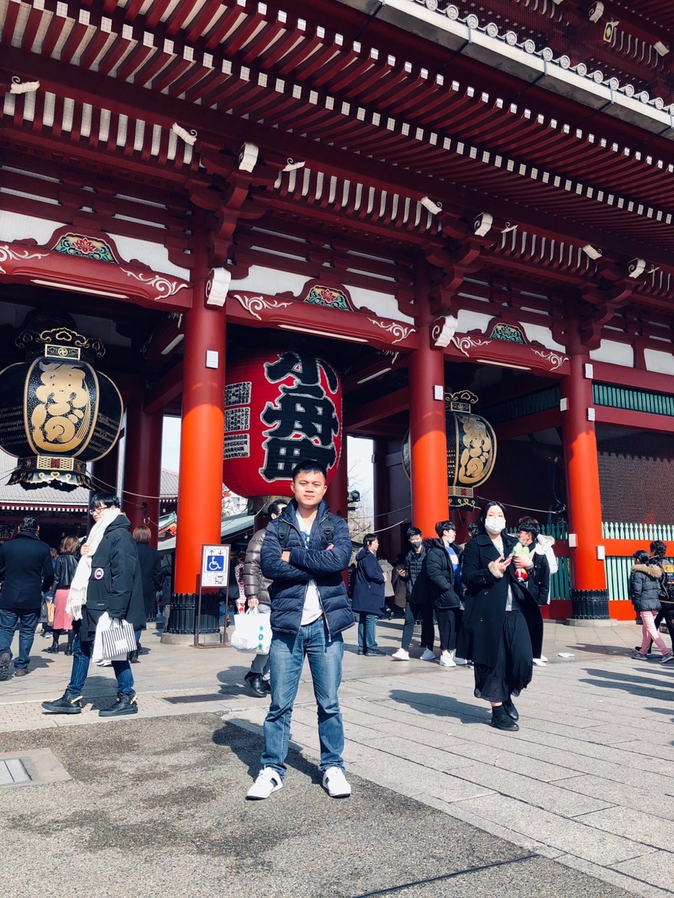

Senior Research at STS Engineering Inc.
ABOUT ME
I'm Thuan, currently serving as a Senior Research Engineer at STS Inc., South Korea. My work involves Big Data analysis, Machine Learning, and Deep Learning, from September 2023--
I hold a master’s degree in Civil Engineering and Naval Architecture from Changwon National University, South Korea. Under the guidance of Prof. Yoon Hyeon Kyu at the Ship Dynamic and Control Lab, my master delved into Fluid Dynamics on ship motion, mathematical modeling, and Machine Learning.
Additionally, I earned a Bachelor of Engineering in Faculty Transportation Mechanical Engineering from the University of Science and Technology, the University of Danang, completing a comprehensive five-year program.
I worked as a Research Assistant in Department of Naval Architecture and Ocean Engineering, Inha University, South Korea, from August 2022 to August 2023.
Where I developed an interest in Computational Ship Design (optimum), collision avoidance, Fluid-structure interaction, and machine learning approach.
My research next focuses on Fluid-structure interaction, applied mathematics, Machine Learning, Deep Learning, and Reinforcement Learning.
Research Interests
My primary research interests include algorithms and architectures for:
Numerical Simulation
Fluid-structure interaction
Machine Learning
Deep Learning
Updating...
[ September,2023 - present]
Senior Research
Department Research & Development at STS Engineering, Inc., Sejong City, South Korea.
[August,2022 - August,2023]
Research Assistant
Department of Naval Architecture and Ocean Engineering, Inha University , South Korea.
Ships and Offshore Structures Engineering Lab, Supervisor: Prof. Joonmo Choung.
M.Sc.
[2020 - 2022]
Civil Engineering and Naval Architecture, Changwon National University , Changwon city, South Korea.
Ship Dynamic and Control Lab, Supervisor: Prof. Yoon Hyeon Kyu.
B.Sc.
[2015 - 2020]
Faculty of Transportation Mechanical Engineering, University of Science and Technology, The University of DaNang, Da Nang city, Viet Nam.
[February - 2019]
Exchange
The Winter School Program at Yokohama National University in Yokohama City, Japan.
[September - 2019]
Internship
Haison Shipbuilding and Repairing - SongThu Corporations, Danang, Vietnam.
[2018 - 2020]
Internship
Engine and Ship Test Center - University of Science and Technology, Thu University of Danang, Vietnam.